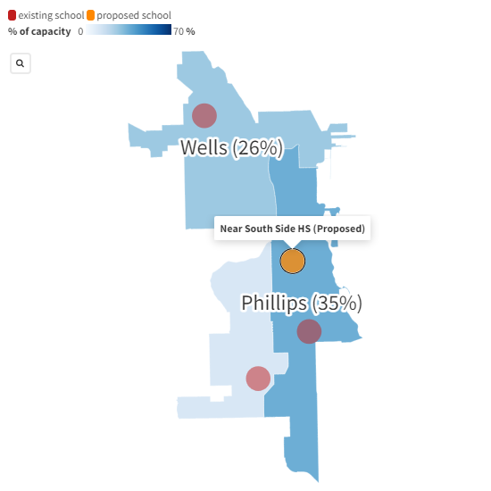

I originally wrote this story for a data journalism class at Northwestern, then made some minor editorial revisions for clarity in November 2023. Bringing context to the story would require interviewing neighborhood residents, community members, parents, staff, students, and local school council members.

In late September, several local news outlets reported on a Chicago Public Schools (CPS) board meeting vote narrowly supporting acquisition of land intended for a proposed new Near South Side high school costing $120 million. The proposed school has community champions.
But WBEZ cited a confidential memo by top CPS officials concerned that competition from a new school would accelerate the decline of nearby schools, while referencing “deep concerns” expressed by the school district data manager in an internal memo from the previous year. CPS recently released annual enrollment data underscoring concerns about systemwide enrollment decline, while the state representative who secured $50 million from the state in support of the school worried about lack of community input in the planning process.
Many factors should be considered in planning a new school, including budget, teacher availability, and access to school programming such as population-specific language offerings.
But a closer look at enrollment trends seems to undermine the case for the new school. Specifically, the three neighboring high schools are operating at a fraction of their capacity with enrollment trending downward at two of them, while enrollment is also trending downward at seven of the nine elementary schools that would serve as feeders.
Looking at year over year change in CPS enrollment by community area shows declining enrollment in most areas of the city.
For Tilden, Phillips, and Wells— the three open enrollment high schools with boundaries overlapping the proposed new school's boundaries— five-year enrollment has declined significantly since the beginning of the 2017-2018 school year.
Complicating the picture a bit, Tilden has shown a rebound in enrollment in the past year (adding 36 students) despite the overall downward trend over five years.
Still, Tilden is operating at only 11% of its ideal capacity, as measured by CPS’s 2021-22 Space Utilization report. By CPS's own definition of “underutilized” as under 70% of ideal capacity, all three neighboring schools are underutilized.
It's worth looking at enrollment at neighboring elementary schools as an indicator of future enrollment potential for the high schools. While 5-year enrollment is trending slightly up for South Loop Elementary and National Teachers Academy, it's trending sharply down for the other seven schools. This does not seem to point to full utilization of existing high schools any time soon, let alone the need for a new school.
The new school proposal seems out of step with the declining enrollment trends and raises some questions. Is there more to the story of Tilden's enrollment rebound amidst enrollment decline amongst small schools? Could the new school potentially attract high school aged students who had never been in CPS? What demographic trends do we see from Census data (I built a block assignment file for the school boundaries as a first step in anchoring the demographic analysis to 2020 census data)? As an alternative, what else could CPS do to improve educational offerings in the Near South Side besides build a new school? Given the slightly increasing enrollment at National Teachers Academy elementary school, did 2018 discussions about converting this existing school to a high school have merit compared to the current proposal for a new building? What else would make the existing high schools appealing to more students?
Schools chief Pedro Martinez is on the record as promising both an investment in the existing schools and a new school.
“People have talked about this as an 'or,'' so either you build a new school or invest in old schools,” Martinez said. “I've never seen this as an 'or.'' For me, it's always been an 'and.'
What, concretely, will CPS offer to Tilden, Dunbar, and Wells? What do these existing schools need to succeed?